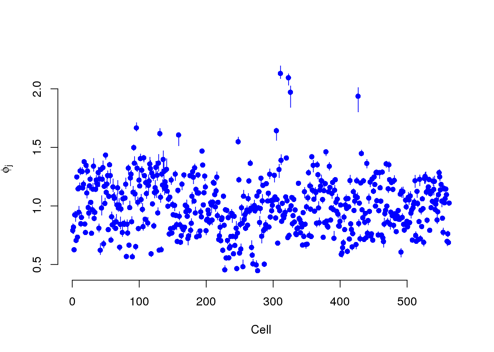
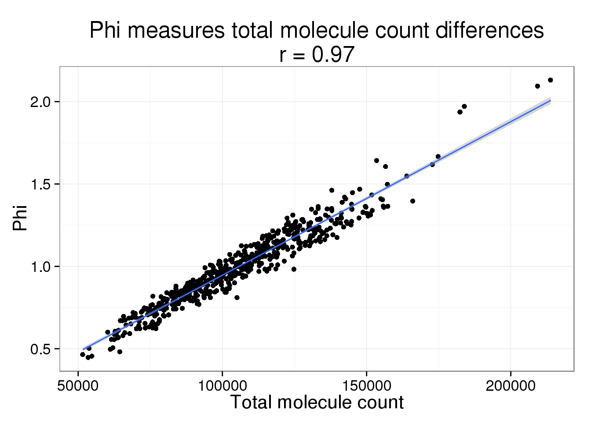
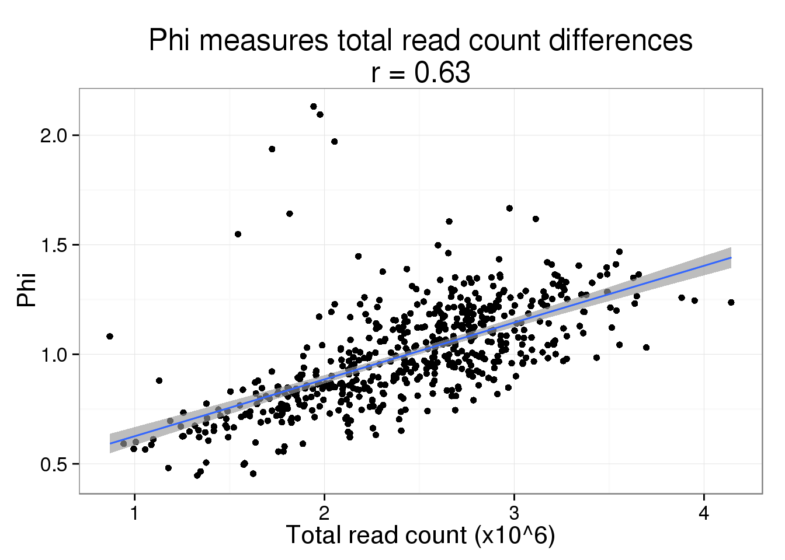
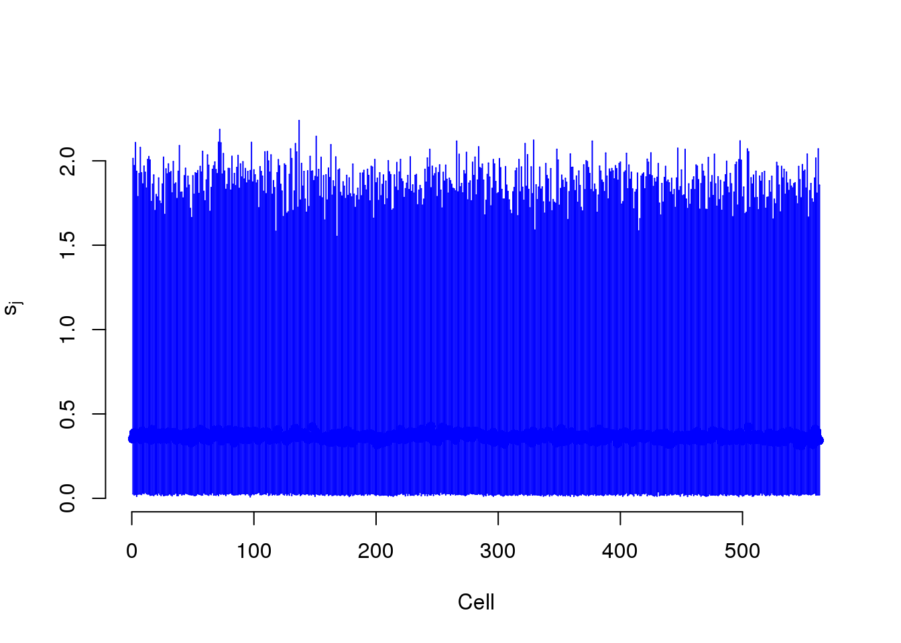
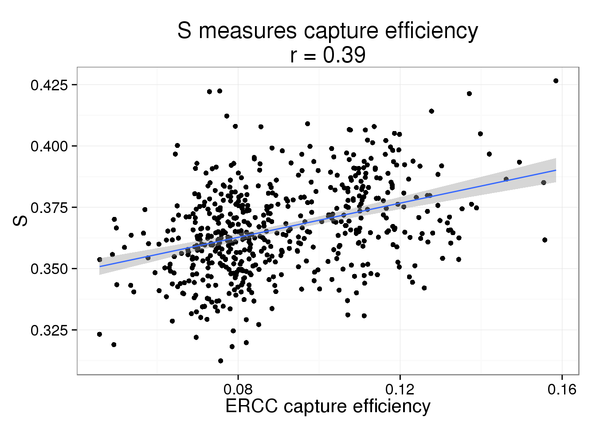
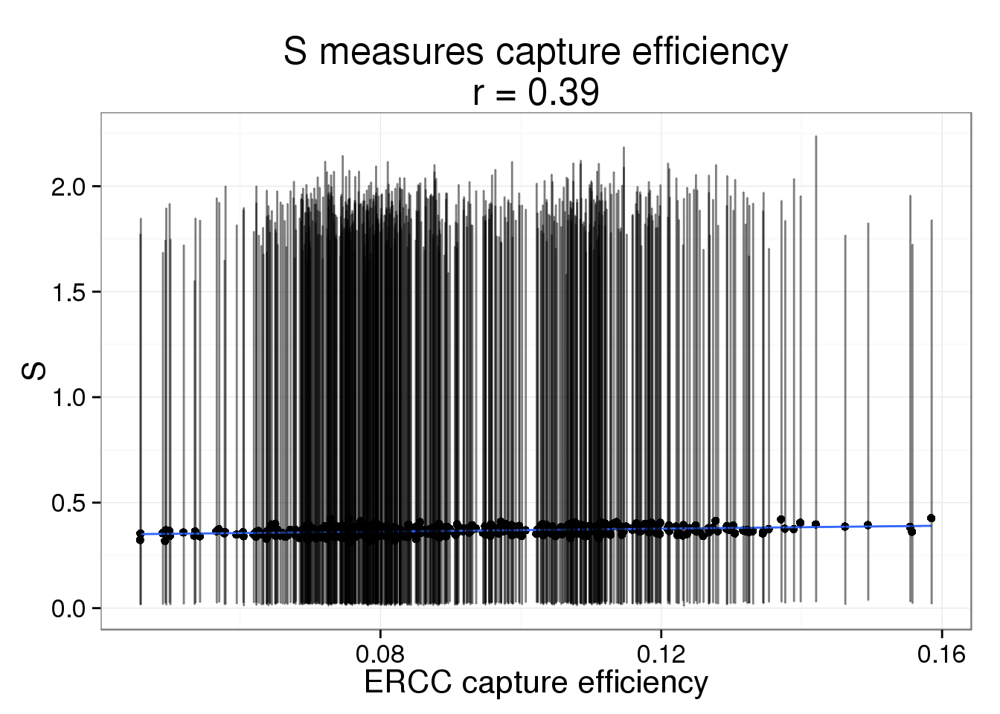
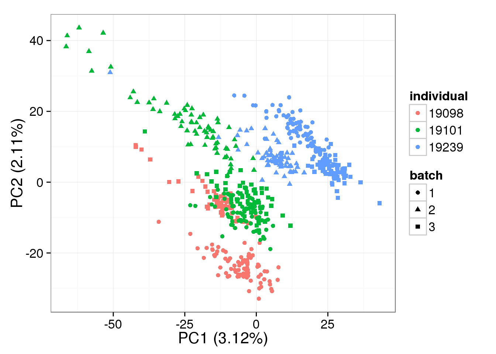
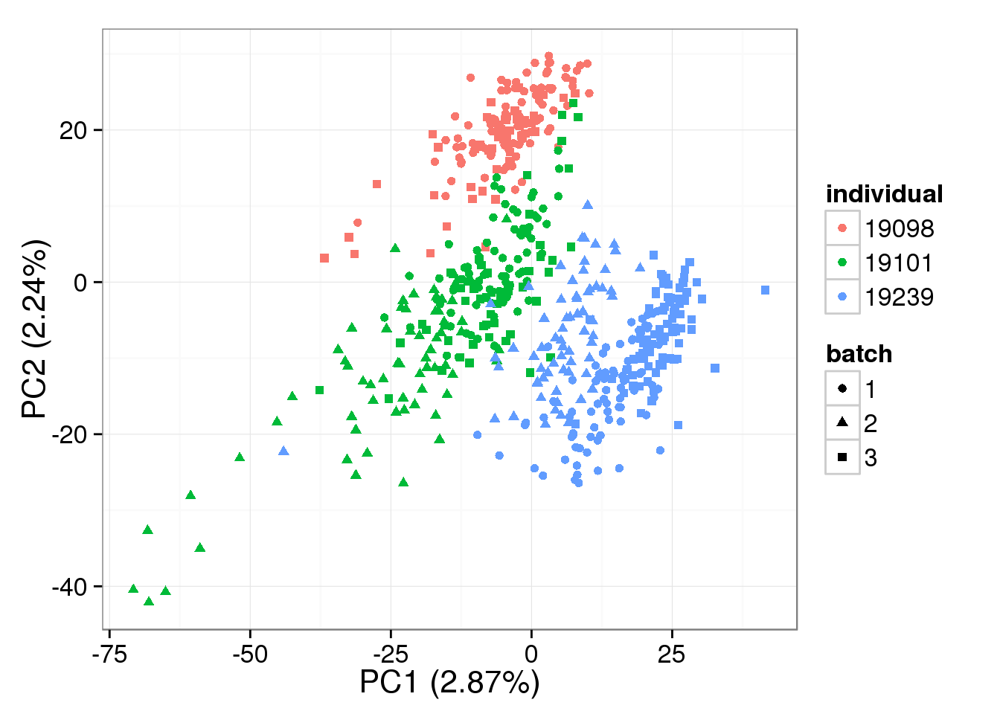
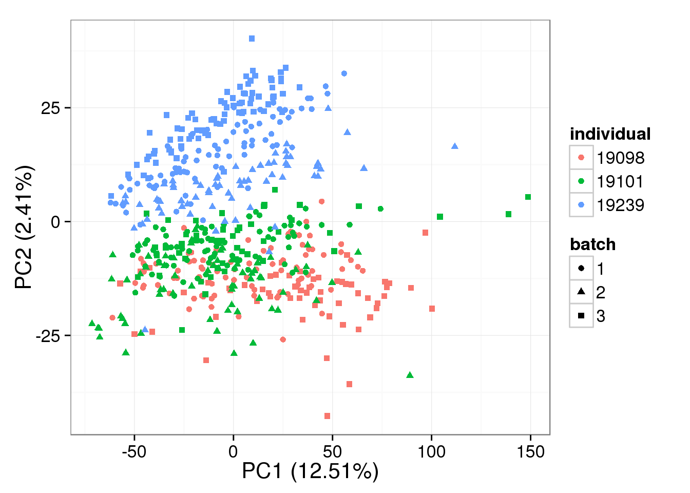

BASiCS - 20,000 iterations
2015-08-10
Last updated: 2015-08-26
Code version: 37b0aacfab1630c60c0da565cedbdc74c4cf1a52
We analyzed our single cell data with BASiCS developed by Vallejos et al., 2015. The results shown here are from a model fit with 20,000 iterations.
Conclusions:
- The parameter Phi captures differences in sequencing depth. It changes quantitatively with increasing iterations, but not qualitatively
- The parameter s measures capture efficiency, but requires a large number of iterations to agree with our estimates
- The normalization provided by BASiCS does not change the PCA result much compared to non-normalized log2 counts per million data, and this does not change based on the number of iterations
Here are all the different versions of the results based on different number of iterations:
BASiCS and its dependency, RcppArmadillo, were able to be installed on the cluster using a new version of gcc. Since this took a long time to run, it was submitted via the following:
echo "Rscript -e 'library(rmarkdown); render(\"basics.Rmd\")'" | \
qsub -l h_vmem=32g -cwd -V -j y -o ~/log/ -N basicslibrary("BASiCS")
library("data.table")
source("functions.R")
library("ggplot2")
theme_set(theme_bw(base_size = 16))
library("edgeR")Loading required package: limmaInput
Below is the description of the data from the BASiCS vignette, interspersed with my code to load the data.
The input dataset for BASiCS must contain the following 3 elements:
Counts: a matrix of raw expression counts with dimensions q times n. First q0 rows must correspond to biological genes. Last q − q0 rows must correspond to technical spike-in genes.
Input annotation.
anno <- read.table("../data/annotation.txt", header = TRUE,
stringsAsFactors = FALSE)Input molecule counts.
molecules <- read.table("../data/molecules.txt", header = TRUE,
stringsAsFactors = FALSE)Input list of quality single cells.
quality_single_cells <- scan("../data/quality-single-cells.txt",
what = "character")Keep only the single cells that passed the QC filters. This also removes the bulk samples.
molecules_single <- molecules[, colnames(molecules) %in% quality_single_cells]
anno_single <- anno[anno$sample_id %in% quality_single_cells, ]
stopifnot(ncol(molecules_single) == nrow(anno_single),
colnames(molecules_single) == anno_single$sample_id)Also remove batch 2 of individual 19098.
molecules_single <- molecules_single[, !(anno_single$individual == 19098 & anno_single$batch == 2)]
anno_single <- anno_single[!(anno_single$individual == 19098 & anno_single$batch == 2), ]
stopifnot(ncol(molecules_single) == nrow(anno_single))Remove genes with zero read counts in the single cells.
expressed_single <- rowSums(molecules_single) > 0
molecules_single <- molecules_single[expressed_single, ]
dim(molecules_single)[1] 17478 563
Tech: a vector ofTRUE/FALSEelements with length q. IfTech[i] = FALSEthe geneiis biological; otherwise the gene is spike-in.
tech <- grepl("ERCC", rownames(molecules_single))
SpikeInput: a vector of length q − q0 whose elements contain the input number of molecules for the spike-in genes (amount per cell).
spike <- read.table("../data/expected-ercc-molecules.txt", header = TRUE,
sep = "\t", stringsAsFactors = FALSE)Only keep the spike-ins that were observed in at least one cell.
spike_input <- spike$ercc_molecules_well[spike$id %in% rownames(molecules_single)]
stopifnot(sum(tech) == length(spike_input))81 of the ERCC spike-ins were observed in the single cell data.
These elements must be stored into an object of class
BASiCS_Data.
basics_data <- newBASiCS_Data(as.matrix(molecules_single), tech, spike_input)An object of class BASiCS_Data
Dataset contains 17478 genes (17397 biological and 81 technical) and 563 cells.
Elements (slots): Counts, Tech, SpikeInput and BatchInfo.
The data contains 1 batch.
NOTICE: BASiCS requires a pre-filtered dataset
- You must remove poor quality cells before creating the BASiCS data object
- We recommend to pre-filter very lowly expressed transcripts before creating the object.
Inclusion criteria may vary for each data. For example, remove transcripts
- with very low total counts across of all samples
- that are only expressed in few cells
(by default genes expressed in only 1 cell are not accepted)
- with very low total counts across the samples where the transcript is expressed
BASiCS_Filter can be used for this purpose Filter
basics_filter = BASiCS_Filter(as.matrix(molecules_single), tech, spike_input,
MinTotalCountsPerCell = 2,
MinTotalCountsPerGene = 2,
MinCellsWithExpression = 2,
MinAvCountsPerCellsWithExpression = 2)
filter_data = newBASiCS_Data(basics_filter$Counts, basics_filter$Tech,
basics_filter$SpikeInput)An object of class BASiCS_Data
Dataset contains 9378 genes (9348 biological and 30 technical) and 563 cells.
Elements (slots): Counts, Tech, SpikeInput and BatchInfo.
The data contains 1 batch.
NOTICE: BASiCS requires a pre-filtered dataset
- You must remove poor quality cells before creating the BASiCS data object
- We recommend to pre-filter very lowly expressed transcripts before creating the object.
Inclusion criteria may vary for each data. For example, remove transcripts
- with very low total counts across of all samples
- that are only expressed in few cells
(by default genes expressed in only 1 cell are not accepted)
- with very low total counts across the samples where the transcript is expressed
BASiCS_Filter can be used for this purpose Fit the model
store_dir <- "../data"
run_name <- "20000"
if (file.exists(paste0(store_dir, "/chain_phi_", run_name, ".txt"))) {
chain_mu = as.matrix(fread(paste0(store_dir, "/chain_mu_", run_name, ".txt")))
chain_delta = as.matrix(fread(paste0(store_dir, "/chain_delta_", run_name, ".txt")))
chain_phi = as.matrix(fread(paste0(store_dir, "/chain_phi_", run_name, ".txt")))
chain_s = as.matrix(fread(paste0(store_dir, "/chain_s_", run_name, ".txt")))
chain_nu = as.matrix(fread(paste0(store_dir, "/chain_nu_", run_name, ".txt")))
chain_theta = as.matrix(fread(paste0(store_dir, "/chain_mu_", run_name, ".txt"))[, 1, with = FALSE])
mcmc_output <- newBASiCS_Chain(mu = chain_mu, delta = chain_delta,
phi = chain_phi, s = chain_s,
nu = chain_nu, theta = chain_theta)
time_total <- readRDS(paste0(store_dir, "/time_total_", run_name, ".rds"))
} else {
time_start <- Sys.time()
mcmc_output <- BASiCS_MCMC(filter_data, N = 20000, Thin = 10, Burn = 10000,
PrintProgress = TRUE, StoreChains = TRUE,
StoreDir = store_dir, RunName = run_name)
time_end <- Sys.time()
time_total <- difftime(time_end, time_start, units = "hours")
saveRDS(time_total, paste0(store_dir, "/time_total_", run_name, ".rds"))
}An object of class BASiCS_Chain
1000 MCMC samples.
Dataset contains 9378 genes (9348 biological and 30 technical) and 563 cells (1 batch).
Elements (slots): mu, delta, phi, s, nu and theta.Fitting the model took 36.12 hours.
Summarize the results.
mcmc_summary <- Summary(mcmc_output)Cellular mRNA content
Phi is the cellular RNA content differences. They ascribe all these differences to true biological differences in RNA content from cell to cell, i.e. due to the cell cylce.
plot(mcmc_summary, Param = "phi")
However, we have observed that
- total molecule count increases with increasing sequencing depth
- this relationship holds within cell cycle phases
- molecules are not exhausted even after thorough sequencing
It is no suprise that Phi and the total molecule counts are highly correlated. But we believe most of these differences are due to sequencing depth and the counts should be standardized.
phi <- displaySummaryBASiCS(mcmc_summary, Param = "phi")
phi <- cbind(phi, anno_single)
phi$total_count <- colSums(counts(filter_data))phi_molecule_plot <- ggplot(phi, aes(x = total_count, y = Phi)) +
geom_point() +
geom_smooth(method = "lm") +
labs(x = "Total molecule count",
title = paste0("Phi measures total molecule count differences\nr = ",
round(cor(phi$total_count, phi$Phi), 2)))
phi_molecule_plot
Since read and molecule counts are highly correlated, we expect the same relationship to hold for read depth. But it does drive the point home more that we think this is due to sequencing depth and not a difference in cell size.
Input read counts.
reads <- read.table("../data/reads.txt", header = TRUE,
stringsAsFactors = FALSE)Subset to only include the quality single cells and the genes used in the BASiCS analysis.
reads_sub <- reads[rownames(reads) %in% rownames(counts(filter_data)),
colnames(reads) %in% colnames(counts(filter_data))]
stopifnot(dim(reads_sub) == dim(counts(filter_data)))
phi$total_read_count <- colSums(reads_sub) / 10^6While the fit is not as good, it is still clearly driving the pattern.
phi_read_plot <- phi_molecule_plot %+% phi %+% aes(x = total_read_count) +
geom_smooth(method = "lm") +
labs(x = "Total read count (x10^6)",
title = paste0("Phi measures total read count differences\nr = ",
round(cor(phi$total_read_count, phi$Phi), 2)))
phi_read_plot
Capture efficiency
S measures the capture efficiency.
plot(mcmc_summary, Param = "s")
efficiency <- numeric(length = ncol(counts(filter_data)))
total_ercc_molecules <- sum(spike$ercc_molecules_well)
for (i in 1:ncol(counts(filter_data))) {
efficiency[i] <- sum(counts(filter_data, type = "technical")[, i]) /
total_ercc_molecules
}
summary(efficiency) Min. 1st Qu. Median Mean 3rd Qu. Max.
0.04581 0.07525 0.08383 0.09030 0.10720 0.15850 s <- displaySummaryBASiCS(mcmc_summary, Param = "s")
s <- cbind(s, anno_single)
s$efficiency <- efficiencyThis takes lots of iterations to estimate well. With just a few thousand iterations, the correlation with the capture efficiency is low. Once the iterations are in the tens of thousands, the correlation with the capture efficiency is better.
s_plot <- ggplot(s, aes(x = efficiency, y = S)) +
geom_point() +
geom_smooth(method = "lm") +
labs(x = "ERCC capture efficiency",
title = paste0("S measures capture efficiency\nr = ",
round(cor(s$efficiency, s$S), 2)))
s_plot
The correlation is harder to see when the the 95% posterior density intervals are added the posterior medians.
s_plot + geom_errorbar(aes(ymin = lower, ymax = upper), alpha = 0.5)
Denoised data
Remove technical noise (i.e. normalize using the ERCC spike-ins).
denoised = BASiCS_DenoisedCounts(Data = filter_data, Chain = mcmc_output)PCA - BASiCS Denoised
Both the raw and the cpm versions of the BASiCS denoised data appear similar to the result with the non-normalized cpm data. This does not change substantially when increasing the iterations from a few thousands to a few tens of thousands.
pca_basics <- run_pca(denoised)
plot_pca(pca_basics$PCs, explained = pca_basics$explained,
metadata = anno_single, color = "individual",
shape = "batch", factors = c("individual", "batch"))
PCA - BASiCS Denoised cpm
denoised_cpm <- cpm(denoised, log = TRUE,
lib.size = colSums(denoised) *
calcNormFactors(denoised, method = "TMM"))
pca_basics_cpm <- run_pca(denoised_cpm)
plot_pca(pca_basics_cpm$PCs, explained = pca_basics_cpm$explained,
metadata = anno_single, color = "individual",
shape = "batch", factors = c("individual", "batch"))
PCA - non-normalized
pca_non <- run_pca(counts(filter_data))
plot_pca(pca_non$PCs, explained = pca_non$explained,
metadata = anno_single, color = "individual",
shape = "batch", factors = c("individual", "batch"))
PCA - non-normalized cpm
non_cpm <- cpm(counts(filter_data), log = TRUE,
lib.size = colSums(counts(filter_data)) *
calcNormFactors(counts(filter_data), method = "TMM"))
pca_non_cpm <- run_pca(non_cpm)
plot_pca(pca_non_cpm$PCs, explained = pca_non_cpm$explained,
metadata = anno_single, color = "individual",
shape = "batch", factors = c("individual", "batch"))
Session information
sessionInfo()R version 3.2.0 (2015-04-16)
Platform: x86_64-unknown-linux-gnu (64-bit)
locale:
[1] LC_CTYPE=en_US.UTF-8 LC_NUMERIC=C
[3] LC_TIME=en_US.UTF-8 LC_COLLATE=en_US.UTF-8
[5] LC_MONETARY=en_US.UTF-8 LC_MESSAGES=en_US.UTF-8
[7] LC_PAPER=en_US.UTF-8 LC_NAME=C
[9] LC_ADDRESS=C LC_TELEPHONE=C
[11] LC_MEASUREMENT=en_US.UTF-8 LC_IDENTIFICATION=C
attached base packages:
[1] stats graphics grDevices utils datasets methods base
other attached packages:
[1] testit_0.4 edgeR_3.10.2 limma_3.24.9 ggplot2_1.0.1
[5] data.table_1.9.4 BASiCS_0.3.0 knitr_1.10.5
loaded via a namespace (and not attached):
[1] Rcpp_0.11.6 magrittr_1.5 BiocGenerics_0.14.0
[4] MASS_7.3-40 munsell_0.4.2 colorspace_1.2-6
[7] lattice_0.20-31 stringr_1.0.0 plyr_1.8.2
[10] tools_3.2.0 parallel_3.2.0 grid_3.2.0
[13] gtable_0.1.2 coda_0.17-1 htmltools_0.2.6
[16] yaml_2.1.13 digest_0.6.8 reshape2_1.4.1
[19] formatR_1.2 evaluate_0.7 rmarkdown_0.6.1
[22] labeling_0.3 stringi_0.4-1 scales_0.2.4
[25] chron_2.3-45 proto_0.3-10